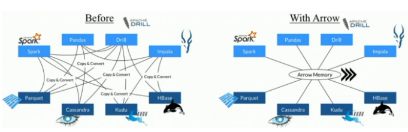
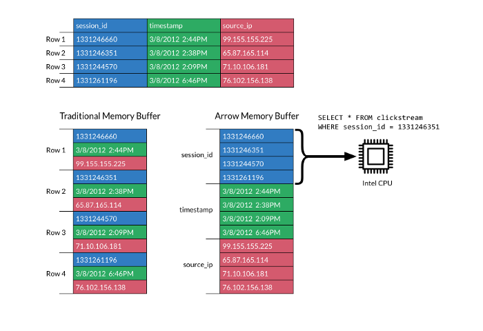

File Formats
Contents
File Formats¶
I present three data formats, feather, parquet and hdf but it exists several more like Apache Avro or Apache ORC.
These data formats may be more appropriate in certain situations. However, the software needed to handle them is either more difficult to install, incomplete, or more difficult to use because less documentation is provided. For ORC and AVRO the python libraries offered are less well maintained than the formats we will see. You can find many on the web but it is hard to know which one is the most stable.
avro and fastavro The following formats are supported by pandas and apache arrow. These softwares are supported by very strong communities.
Feather¶
For light data, it is recommanded to use Feather. It is a fast, interoperable data frame storage that comes with bindings for python and R.
Feather uses also the Apache Arrow columnar memory specification to represent binary data on disk. This makes read and write operations very fast.
Parquet file format¶
Parquet format is a common binary data store, used particularly in the Hadoop/big-data sphere. It provides several advantages relevant to big-data processing:
The Apache Parquet project provides a standardized open-source columnar storage format for use in data analysis systems. It was created originally for use in Apache Hadoop with systems like Apache Drill, Apache Hive, Apache Impala, and Apache Spark adopting it as a shared standard for high performance data IO.
Hierarchical Data Format¶
HDF is a self-describing data format allowing an application to interpret the structure and contents of a file with no outside information. One HDF file can hold a mix of related objects which can be accessed as a group or as individual objects.
Let’s create some big dataframe with consitent data (Floats) and 10% of missing values:
import feather
import pandas as pd
import numpy as np
arr = np.random.randn(500000) # 10% nulls
arr[::10] = np.nan
df = pd.DataFrame({'column_{0}'.format(i): arr for i in range(10)})
%time df.to_csv('test.csv')
CPU times: user 7.25 s, sys: 467 ms, total: 7.72 s
Wall time: 7.75 s
%rm test.h5
rm: test.h5: No such file or directory
%time df.to_hdf("test.h5", key="test")
CPU times: user 66.6 ms, sys: 70.2 ms, total: 137 ms
Wall time: 1.83 s
%time df.to_parquet('test.parquet')
CPU times: user 260 ms, sys: 42.7 ms, total: 303 ms
Wall time: 1.14 s
%time df.to_feather('test.feather')
CPU times: user 158 ms, sys: 28 ms, total: 186 ms
Wall time: 111 ms
%%bash
du -sh test.*
97M test.csv
36M test.feather
42M test.h5
37M test.parquet
%%time
df = pd.read_csv("test.csv")
len(df)
CPU times: user 749 ms, sys: 98.7 ms, total: 848 ms
Wall time: 850 ms
500000
%%time
df = pd.read_hdf("test.h5")
len(df)
CPU times: user 51 ms, sys: 52.5 ms, total: 103 ms
Wall time: 104 ms
500000
%%time
df = pd.read_parquet("test.parquet")
len(df)
CPU times: user 82.2 ms, sys: 76.4 ms, total: 159 ms
Wall time: 623 ms
500000
%%time
df = pd.read_feather("test.feather")
len(df)
CPU times: user 31.8 ms, sys: 34.4 ms, total: 66.3 ms
Wall time: 30.8 ms
500000
# Now we create a new big dataframe with a column of strings
import numpy as np
import pandas as pd
from lorem import sentence
words = np.array(sentence().strip().lower().replace(".", " ").split())
# Set the seed so that the numbers can be reproduced.
np.random.seed(0)
n = 1000000
df = pd.DataFrame(np.c_[np.random.randn(n, 5),
np.random.randint(0,10,(n, 2)),
np.random.randint(0,1,(n, 2)),
np.array([np.random.choice(words) for i in range(n)])] ,
columns=list('ABCDEFGHIJ'))
df["A"][::10] = np.nan
len(df)
1000000
%%time
df.to_csv('test.csv', index=False)
CPU times: user 4.66 s, sys: 207 ms, total: 4.87 s
Wall time: 4.93 s
%%time
df.to_hdf('test.h5', key="test", mode="w")
<timed eval>:1: PerformanceWarning:
your performance may suffer as PyTables will pickle object types that it cannot
map directly to c-types [inferred_type->mixed,key->block0_values] [items->Index(['A', 'B', 'C', 'D', 'E', 'F', 'G', 'H', 'I', 'J'], dtype='object')]
CPU times: user 2.71 s, sys: 539 ms, total: 3.25 s
Wall time: 3.49 s
%%time
df.to_feather('test.feather')
CPU times: user 768 ms, sys: 136 ms, total: 904 ms
Wall time: 836 ms
%%time
df.to_parquet('test.parquet')
CPU times: user 1.07 s, sys: 68.6 ms, total: 1.14 s
Wall time: 1.19 s
%%time
df = pd.read_csv("test.csv")
len(df)
CPU times: user 1.17 s, sys: 216 ms, total: 1.38 s
Wall time: 1.38 s
1000000
%%time
df = pd.read_hdf("test.h5")
len(df)
CPU times: user 1.12 s, sys: 420 ms, total: 1.54 s
Wall time: 1.54 s
1000000
%%time
df = pd.read_feather('test.feather')
len(df)
CPU times: user 1.62 s, sys: 440 ms, total: 2.06 s
Wall time: 1.98 s
1000000
%%time
df = pd.read_parquet('test.parquet')
len(df)
CPU times: user 1.79 s, sys: 447 ms, total: 2.24 s
Wall time: 1.8 s
1000000
df.head(10)
| A | B | C | D | E | F | G | H | I | J | |
|---|---|---|---|---|---|---|---|---|---|---|
| 0 | None | 0.4001572083672233 | 0.9787379841057392 | 2.240893199201458 | 1.8675579901499675 | 0 | 4 | 0 | 0 | dolorem |
| 1 | -0.977277879876411 | 0.9500884175255894 | -0.1513572082976979 | -0.10321885179355784 | 0.41059850193837233 | 5 | 5 | 0 | 0 | dolorem |
| 2 | 0.144043571160878 | 1.454273506962975 | 0.7610377251469934 | 0.12167501649282841 | 0.44386323274542566 | 6 | 1 | 0 | 0 | eius |
| 3 | 0.33367432737426683 | 1.4940790731576061 | -0.20515826376580087 | 0.31306770165090136 | -0.8540957393017248 | 0 | 5 | 0 | 0 | numquam |
| 4 | -2.5529898158340787 | 0.6536185954403606 | 0.8644361988595057 | -0.7421650204064419 | 2.2697546239876076 | 6 | 7 | 0 | 0 | sed |
| 5 | -1.4543656745987648 | 0.04575851730144607 | -0.1871838500258336 | 1.5327792143584575 | 1.469358769900285 | 6 | 0 | 0 | 0 | labore |
| 6 | 0.1549474256969163 | 0.37816251960217356 | -0.8877857476301128 | -1.980796468223927 | -0.3479121493261526 | 8 | 0 | 0 | 0 | voluptatem |
| 7 | 0.15634896910398005 | 1.2302906807277207 | 1.2023798487844113 | -0.3873268174079523 | -0.30230275057533557 | 5 | 5 | 0 | 0 | sed |
| 8 | -1.0485529650670926 | -1.4200179371789752 | -1.7062701906250126 | 1.9507753952317897 | -0.5096521817516535 | 7 | 5 | 0 | 0 | eius |
| 9 | -0.4380743016111864 | -1.2527953600499262 | 0.7774903558319101 | -1.6138978475579515 | -0.2127402802139687 | 2 | 0 | 0 | 0 | voluptatem |
df['J'] = pd.Categorical(df.J)
%time df.to_feather('test.feather')
CPU times: user 557 ms, sys: 85.9 ms, total: 643 ms
Wall time: 597 ms
%time df.to_parquet('test.parquet')
CPU times: user 935 ms, sys: 66.1 ms, total: 1 s
Wall time: 1.06 s
%%time
df = pd.read_feather('test.feather')
len(df)
CPU times: user 1.29 s, sys: 322 ms, total: 1.61 s
Wall time: 1.55 s
1000000
%%time
df = pd.read_parquet('test.parquet')
len(df)
CPU times: user 1.59 s, sys: 357 ms, total: 1.94 s
Wall time: 1.67 s
1000000
Feather or Parquet¶
Parquet format is designed for long-term storage, where Arrow is more intended for short term or ephemeral storage because files volume are larger.
Parquet is usually more expensive to write than Feather as it features more layers of encoding and compression.
Feather is unmodified raw columnar Arrow memory. We will probably add simple compression to Feather in the future.
Due to dictionary encoding, RLE encoding, and data page compression, Parquet files will often be much smaller than Feather files
Parquet is a standard storage format for analytics that’s supported by Spark. So if you are doing analytics, Parquet is a good option as a reference storage format for query by multiple systems
Apache Arrow¶
Arrow is a columnar in-memory analytics layer designed to accelerate big data. It houses a set of canonical in-memory representations of hierarchical data along with multiple language-bindings for structure manipulation. Arrow offers an unified way to be able to share the same data representation among languages and it will certainly be the next standard to store dataframes in all languages.

Apache Arrow is an ideal in-memory transport layer for data that is being read or written with Parquet files. PyArrow includes Python bindings to read and write Parquet files with pandas.
columnar storage, only read the data of interest
efficient binary packing
choice of compression algorithms and encoding
split data into files, allowing for parallel processing
range of logical types
statistics stored in metadata allow for skipping unneeded chunks
data partitioning using the directory structure

Example:
import pyarrow as pa
import pyarrow.parquet as pq
import pandas as pd
import numpy as np
arr = np.random.randn(500000) # 10% nulls
arr[::10] = np.nan
df = pd.DataFrame({'column_{0}'.format(i): arr for i in range(10)})
hdfs = pa.hdfs.connect()
table = pa.Table.from_pandas(df)
pq.write_to_dataset(table, root_path="test", filesystem=hdfs)
hdfs.ls("test")
Read CSV from HDFS¶
Put the file test.csv on hdfs system
from pyarrow import csv
with hdfs.open("/data/nycflights/1999.csv", "rb") as f:
df = pd.read_csv(f, nrows = 10)
print(df.head())
Read Parquet File from HDFS with pandas¶
import pandas as pd
wikipedia = pd.read_parquet("hdfs://svmass2.mass.uhb.fr:54310/data/pagecounts-parquet/part-00007-8575060f-6b57-45ea-bf1d-cd77b6141f70.snappy.parquet", engine=’pyarrow’)
print(wikipedia.head())
Read Parquet File with pyarrow¶
table = pq.read_table("example.parquet")
Writing a parquet file from Apache Arrow¶
pq.write_table(table, "example.parquet")
Check metadata¶
parquet_file = pq.ParquetFile("example.parquet")
print(parquet_file.metadata)
See schema¶
print(parquet_file.schema)
Connect to the Hadoop file system¶
hdfs = pa.hdfs.connect()
# copy to local
with hdfs.open("user.txt", "rb") as f:
f.download("user.text")
# write parquet file on hdfs
with open("example.parquet", "rb") as f:
pa.HadoopFileSystem.upload(hdfs, "example.parquet", f)
# List files
for f in hdfs.ls("/user/navaro_p"):
print(f)
# create a small dataframe and write it to hadoop file system
small_df = pd.DataFrame(np.array([[1, 2, 3], [4, 5, 6], [7, 8, 9]]), columns=['a', 'b', 'c'])
table = pa.Table.from_pandas(small_df)
pq.write_table(table, "small_df.parquet", filesystem=hdfs)
# Read files from Hadoop with pandas
with hdfs.open("/data/irmar.csv") as f:
df = pd.read_csv(f)
print(df.head())
# Read parquet file from Hadoop with pandas
server = "hdfs://svmass2.mass.uhb.fr:54310"
path = "data/pagecounts-parquet/part-00007-8575060f-6b57-45ea-bf1d-cd77b6141f70.snappy.parquet"
pagecount = pd.read_parquet(os.path.join(server, path), engine="pyarrow")
print(pagecount.head())
# Read parquet file from Hadoop with pyarrow
table = pq.read_table(os.path.join(server,path))
print(table.schema)
df = table.to_pandas()
print(df.head())
Exercise¶
Take the second dataframe with string as last column
Create an arrow table from pandas dataframe
Write the file test.parquet from arrow table
Print metadata from this parquet file
Print schema
Upload the file to hadoop file system
Read this file from hadoop file system and print dataframe head
Hint: check the doc https://arrow.apache.org/docs/python/parquet.html